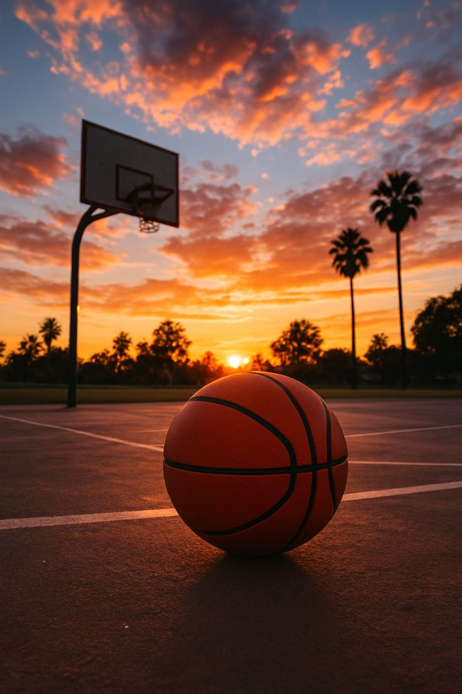

Basketball is a team sport in which two teams of five players each (excluding subs), opposing one another on a rectangular court, compete with the primary objective of shooting a basketball (approximately 9.4 inches (24 cm) in diameter) through the defender's hoop (a basket 18 inches (46 cm) in diameter mounted 10 feet (3.05 m) high to a backboard at each end of the court). Teams alternate between offense, when they attempt to score, and defense, when they try to prevent the opposing side from scoring. A field goal is worth two points, unless made from behind the three-point line, when it is worth three.
Basketball is a very popular sport worldwide.
Players must always follow the rules of the game.
both
Players must always follow the rules of the game.
Invented in 1891 by Canadian-American gym teacher James Naismith in Springfield, Massachusetts, in the United States, basketball has evolved to become one of the world's most popular and widely viewed sports.[1][2] The Nationa l Basketball Association (NBA) is the most significant professional basketball league in the world in terms of popularity, salaries, talent, and level of competition[3][4] (drawing most of its talent from U.S. college basketball). Outside North America, the top clubs from national leagues qualify to continental championships such as the EuroLeague and the Basketball Champions League Americas. The FIBA Basketball World Cup and Men's Olympic Basketball Tournament are the majo r international events of the sport and attract top national teams from around the world. Each continent hosts regional competitions for national teams, like EuroBasket and FIBA AmeriCup.
Basketball Detailsthats all i did today